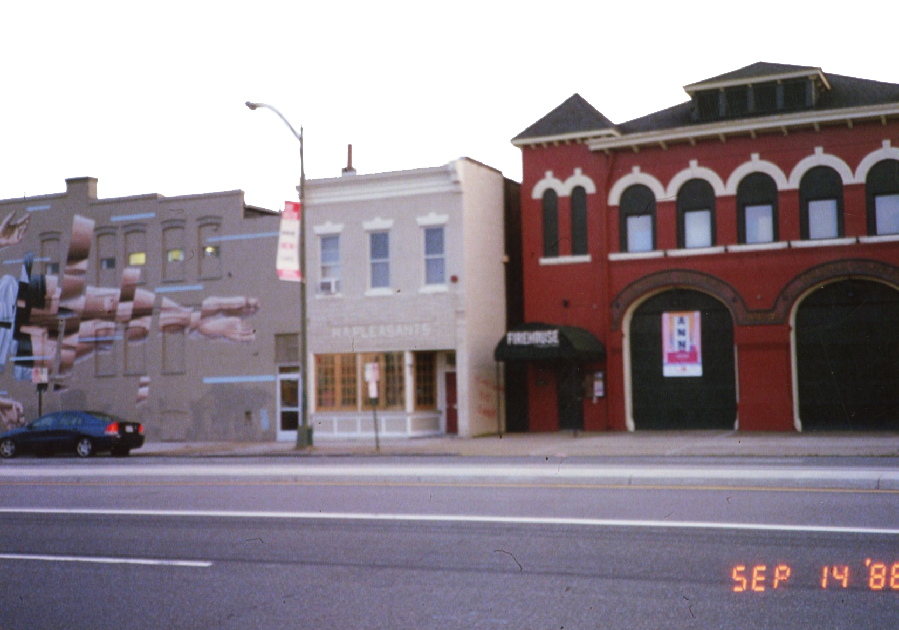
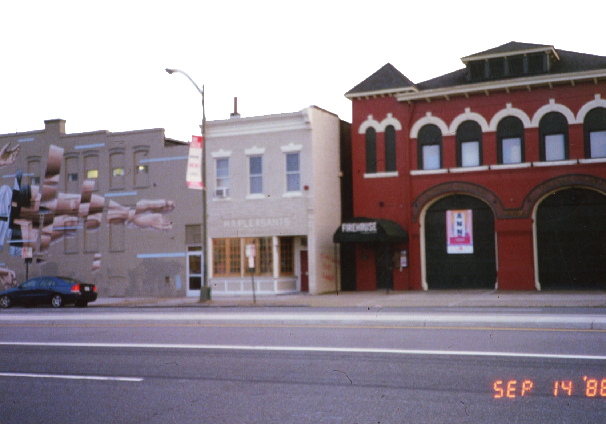

name: jennifer b
a project for HANDMADE WEB
june 20 22
hey! welcome to jennifer's first handmade website for web design! i am a
graphic design major coming onto my senior year and while i have limited
background knowledge on coding, website making is very exciting to me :-)
this site is exploreable through the sprites on the right-hand side for you to
discover things about me !
 
